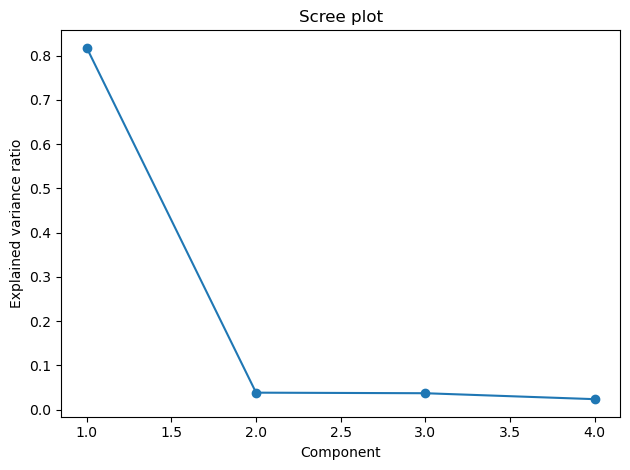
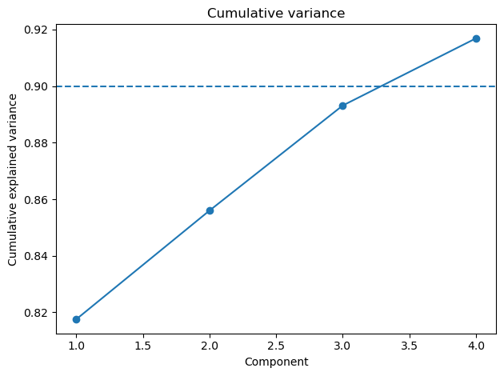
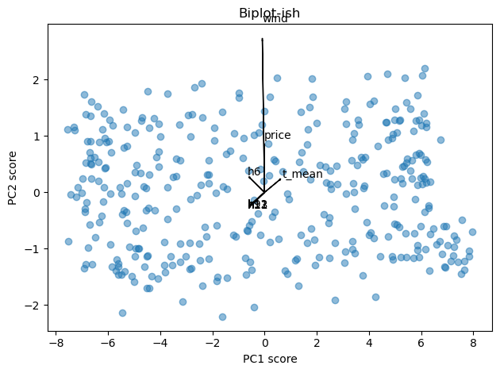

import datetime
import pandas as pd
import numpy as np
import matplotlib.pyplot as plt
import seaborn as sns
from sklearn.preprocessing import StandardScaler
from sklearn.decomposition import PCA
from sklearn.pipeline import Pipeline
Principal Component Analysis (PCA)#
🎯 What problem does PCA solve?#
Energy datasets often have many correlated features (24 hourly loads, weather, tariffs, PV, etc.). PCA compresses them into a few orthogonal patterns (principal components, PCs) that explain most of the variability with minimal information loss.
Think of it as discovering the main “stories” your data keeps telling—without the noise.
🧩 What is a principal component?#
A principal component is a direction in feature space that captures as much variance as possible, subject to being orthogonal to earlier components.
Loadings = the recipe: how each original feature (e.g.,
h0..h23,t_mean,price) contributes to a component.Scores = the amount of that recipe each sample/day has.
Explained variance = how much of your dataset’s variability that component covers.
🔌 Energy intuition (how components look)#
Imagine each row is one day with 24 hourly kWh + weather:
PC1 (base pattern): all daytime hours positive and similar → captures baseline + typical daily shape.
PC2 (shape trade-off): morning hours positive, evening negative (or vice versa) → morning vs evening dominance.
PC3 (regime effect): weekend hours load differently from weekdays, or a midday dip aligned with PV generation.
Weather/price PCs: large positive loadings on hot-hour loads and on
t_mean→ cooling demand; negative loadings aligned withpriceduring peak TOU → price responsiveness.
You don’t “name” components by formula—you interpret them by reading the loadings like a fingerprint.
🧪 Reading PCA outputs like a pro#
Scree plot: pick the number of PCs where the curve bends (“elbow”) or where cumulative variance ≥ 90–95%.
Loadings table:
Large same-sign loadings across h9–h17 → a daytime mode.
Opposite signs across morning vs evening → a timing trade-off.
Big loading on
t_meanalongside late-afternoon hours → heat-driven peak.
Scores scatter (PC1 vs PC2):
Clusters = regimes (winter vs summer, weekday vs weekend).
Outliers = anomalies (stuck HVAC, holidays, data glitches).
🛠️ How you actually use PCA in energy workflows#
Feature compression for forecasting 🔮: Replace 24 hourly columns with 3–6 PC scores → simpler, less collinear models with similar accuracy.
Archetype discovery 🏢: Run PCA on normalized daily profiles across buildings; cluster the scores to find archetypes (office 9–18, retail evening, 24/7).
PV + load disentangling ☀️⚡: A component with negative midday loadings and positive PV/irradiance suggests self-consumption shaping the net load.
Anomaly detection 🚨: Reconstruct each day from first k PCs; large residual = unusual day → investigate.
Tariff impact 💶: If a component aligns with peak-price hours and scores correlate with price, you’ve got price-responsive behavior.
🧭 Minimal interpretation recipe (step-by-step)#
Standardize all inputs (kWh, °C, € on equal footing).
Choose PCs by cumulative variance (target 90–95%).
Inspect loadings: list top 8–10 contributors per PC and describe the pattern in words.
Plot scores by season/weekday to see regimes.
Validate with domain knowledge (does PC2’s evening emphasis match operations or PV deficit?).
Use scores in your model or monitoring dashboards; track residuals for faults.
⚠️ Common pitfalls (and quick fixes)#
Unscaled features → PCA is unit-sensitive → always standardize.
Mixed regimes in one PCA (winter+summer) blur patterns → split by regime or include dummies.
Over-interpretation → PCs are correlational, not causal → corroborate.
Too few PCs → underfit reconstructions (miss important patterns) → check residuals.
Too many PCs → you lose the benefit of simplification → stick to variance target or elbow.
🧪 Generate synthetic energy data (hourly → daily features)#
This makes 365 days of hourly load with temperature, wind, price, and PV influence. It then reshapes to 24 hourly columns per day (h0..h23) plus extras (t_mean, wind, price).
rng = np.random.default_rng(42)
# ----- 1) Hourly time index for one year
start = "2024-01-01"
end = "2024-12-31 23:00"
idx_h = pd.date_range(start, end, freq="h")
n = len(idx_h)
# ----- 2) Weather + calendar features
doy = idx_h.day_of_year.to_numpy()
hour = idx_h.hour.to_numpy()
dow = idx_h.dayofweek.to_numpy() # 0=Mon
# Temperature: simple annual sinusoid + noise (°C)
t_out = 6 + 12*np.sin(2*np.pi*(doy-30)/365) + rng.normal(0, 2, n)
# Wind (m/s) with weak weekly pattern
wind = 3 + 1.2*np.sin(2*np.pi*(dow)/7) + rng.normal(0, 0.8, n)
wind = np.clip(wind, 0, None)
# Day/night & occupancy profiles
workday = (dow < 5).astype(float)
weekend = 1 - workday
morning_bump = np.exp(-0.5*((hour-9)/2.5)**2)
evening_peak = np.exp(-0.5*((hour-19)/2.8)**2)
night = ((hour<=6) | (hour>=23)).astype(float)
# PV profile (kW, proxy): midday bell + seasonal amplitude
pv_midday = np.exp(-0.5*((hour-12)/3.0)**2)
pv_season = 0.6 + 0.4*np.sin(2*np.pi*(doy-80)/365) # more in summer
pv_kw = 3.5 * pv_midday * np.clip(pv_season, 0, None)
# small clouds noise
pv_kw *= np.clip(1 + rng.normal(0, 0.08, n), 0, None)
# Price (€/kWh) with TOU + random daily level
daily_level = 0.12 + 0.02*np.sin(2*np.pi*(doy)/14) + rng.normal(0, 0.01, n)
tou = 0.02*( (hour>=8)&(hour<=11) ) + 0.03*( (hour>=17)&(hour<=21) )
price = np.clip(daily_level + tou, 0.05, None)
# ----- 3) True load synthesis (kWh)
# Base + workday structure + weather sensitivity + PV self-consumption effect
base = 0.9 + 0.15*workday + 0.05*weekend
shape = 0.35*morning_bump + 0.55*evening_peak + 0.1*night
temp_effect = 0.03*np.maximum(20 - t_out, 0) + 0.02*np.maximum(t_out - 24, 0) # heating + cooling
price_shift = -0.12*tou*price # small reduction at high TOU (elasticity proxy)
pv_self_cons = -0.25*pv_kw # PV lowers net demand (behind-the-meter)
noise = rng.normal(0, 0.08, n)
load_kwh = np.clip(base + shape + temp_effect + price_shift + pv_self_cons + noise, 0.05, None)
# ----- 4) Assemble hourly dataframe
df_h = pd.DataFrame({
"ts": idx_h,
"load": load_kwh,
"t_out": t_out,
"wind": wind,
"price": price,
"pv": pv_kw,
"dow": dow,
})
df_h["date"] = df_h["ts"].dt.date
df_h["hour"] = df_h["ts"].dt.hour
# ----- 5) Daily features: h0..h23 + extras
# pivot to wide (24 hourly columns)
wide = df_h.pivot_table(index="date", columns="hour", values="load")
wide.columns = [f"h{h}" for h in wide.columns]
extras = df_h.groupby("date").agg(
t_mean=("t_out","mean"),
wind=("wind","mean"),
price=("price","mean"),
)
df = wide.join(extras)
df.index = pd.to_datetime(df.index)
# Optional: add weekday/weekend dummies (if you want them outside PCA)
df["is_weekend"] = (df.index.dayofweek >= 5).astype(int)
print(df.shape)
df.head()
(366, 28)
| h0 | h1 | h2 | h3 | h4 | h5 | h6 | h7 | h8 | h9 | ... | h18 | h19 | h20 | h21 | h22 | h23 | t_mean | wind | price | is_weekend | |
|---|---|---|---|---|---|---|---|---|---|---|---|---|---|---|---|---|---|---|---|---|---|
| date | |||||||||||||||||||||
| 2024-01-01 | 1.825245 | 1.728533 | 1.765869 | 1.695261 | 1.911754 | 1.947786 | 1.875336 | 1.818838 | 1.834161 | 1.963633 | ... | 2.108718 | 2.174184 | 2.178795 | 2.225311 | 1.813753 | 1.939323 | 0.217159 | 3.329401 | 0.140468 | 0 |
| 2024-01-02 | 1.630939 | 1.803917 | 1.709785 | 1.733778 | 1.741957 | 1.749099 | 1.953160 | 1.873335 | 1.933130 | 1.827391 | ... | 2.111387 | 2.068489 | 2.255913 | 2.126081 | 1.747304 | 1.933809 | 0.793270 | 3.934520 | 0.146710 | 0 |
| 2024-01-03 | 1.625725 | 1.758491 | 1.656208 | 1.667843 | 1.937981 | 1.902183 | 2.025241 | 1.856181 | 1.775639 | 1.867678 | ... | 2.309005 | 2.259248 | 2.037368 | 2.008480 | 2.074270 | 2.117119 | 0.436705 | 4.022539 | 0.150094 | 0 |
| 2024-01-04 | 1.740508 | 1.661285 | 1.730576 | 1.590813 | 1.684813 | 1.708238 | 1.877465 | 1.872076 | 1.935463 | 1.776445 | ... | 2.060827 | 2.222365 | 2.064024 | 2.038698 | 2.129031 | 2.181239 | 0.489955 | 3.520584 | 0.149388 | 0 |
| 2024-01-05 | 1.691500 | 1.808358 | 1.687139 | 1.783932 | 1.722025 | 1.786967 | 1.942621 | 1.977999 | 1.824559 | 1.735895 | ... | 2.174078 | 2.265192 | 2.131604 | 2.170558 | 1.879204 | 1.889897 | 0.573100 | 2.664423 | 0.145597 | 0 |
5 rows × 28 columns
What you get
dfwith shape[365, 24 + 3 (+1 optional)]24 hourly load columns:
h0..h23Extras:
t_mean,wind,price(andis_weekendif you keep it)
🧪 Minimal workflow (scikit-learn)#
# Example: hourly features per day for one building (columns h0..h23) + weather
# df shape: [n_days, 24 + extras]
# Ensure no NaNs; impute or drop beforehand.
features = [f"h{h}" for h in range(24)] + ["t_mean", "wind", "price"]
X = df[features].copy()
pipe = Pipeline([
("scaler", StandardScaler()),
("pca", PCA(n_components=0.9, svd_solver="full")) # keep ≥90% variance
])
X_pca = pipe.fit_transform(X)
pca = pipe.named_steps["pca"]
explained = pca.explained_variance_ratio_ # fraction per component
cum = explained.cumsum() # cumulative explained variance
loadings = pd.DataFrame(
pca.components_.T, index=features,
columns=[f"PC{i+1}" for i in range(pca.n_components_)]
)
scores = pd.DataFrame(
X_pca, index=df.index,
columns=[f"PC{i+1}" for i in range(pca.n_components_)]
)
Tips
Always standardize features (kWh vs °C vs €).
Use
n_components=0.9(or 0.95) to auto-choose count by retained variance.
📈 Quick visuals (matplotlib only)#
Scree plot (how many PCs?):
plt.figure()
plt.plot(np.arange(1, len(explained)+1), explained, marker="o")
plt.xlabel("Component")
plt.ylabel("Explained variance ratio")
plt.title("Scree plot")
plt.tight_layout()
plt.show()
plt.figure()
plt.plot(np.arange(1, len(cum)+1), cum, marker="o")
plt.axhline(0.90, linestyle="--")
plt.xlabel("Component")
plt.ylabel("Cumulative explained variance")
plt.title("Cumulative variance")
plt.tight_layout()
plt.show()


Biplot (PC1 vs PC2 with top loadings):
k = 8 # show top-k contributing features
pc1, pc2 = 0, 1
fig, ax = plt.subplots()
ax.scatter(scores.iloc[:, pc1], scores.iloc[:, pc2], alpha=0.5)
ax.set_xlabel("PC1 score"); ax.set_ylabel("PC2 score"); ax.set_title("Biplot-ish")
# arrows for top loadings
L = loadings.iloc[:, [pc1, pc2]]
top = L.abs().sum(1).sort_values(ascending=False).head(k).index
for feat in top:
x, y = L.loc[feat, :]
ax.arrow(0, 0, x*3, y*3, head_width=0.03, length_includes_head=True)
ax.text(x*3*1.1, y*3*1.1, feat)
plt.tight_layout(); plt.show()

📘 A concrete “story” from the synthetic dataset you generated#
PC1: strong positive loadings from h8–h20 → “daytime demand level” (base usage + occupancy).
PC2: positive loadings around h6–h10, negative around h18–h22 → “morning vs evening balance.”
PC3: negative at h11–h14, positive on
pv(if included) → “midday PV shaping net load.” Days with high PC3 score likely show big PV influence (sunny), while low scores indicate cloudy/winter days.
🔧 Energy use cases#
Shape features for forecasting 🔮
Use the first few scores (
PC1..PCk) as compact predictors instead of 24 hourly lags—often reduces collinearity and overfitting.
Portfolio archetypes 🏢🏬
Run PCA on normalized daily profiles of many buildings.
Cluster the scores to find archetypes (office-like, retail-like, 24/7).
PV + load disentangling ☀️⚡
Include PV generation and irradiance.
A PC with strong positive midday kWh and negative PV could indicate midday self-consumption dynamics.
Tariff sensitivity 💶
Add price features; PCs showing price-aligned load shifts suggest price responsiveness.
Anomaly detection 🚨
Reconstruct using first k PCs; large residuals
X - X_reconflag odd days (stuck HVAC, holidays, sensor faults).
# Reconstruction with first k components
k = 3
W = pca.components_[:k, :] # [k, d]
S = X_pca[:, :k] # [n, k]
Xhat_std = S @ W # back in standardized space
Xhat = (Xhat_std * pipe.named_steps["scaler"].scale_) + pipe.named_steps["scaler"].mean_
resid = np.abs(X.values - Xhat)
anomaly_score = resid.mean(1) # simple score; threshold via quantile
🧭 Interpreting loadings (rules of thumb)#
Same sign loadings → features move together (e.g., h9–h17 all positive → daytime mode).
Opposite signs → trade-off (e.g., morning vs evening peaks).
Big absolute values → strong contributors.
⚠️ Pitfalls (and fixes)#
Unscaled inputs → PCs dominated by high-variance units → always standardize.
Mixed regimes (weekday/weekend, seasons) → run PCA per regime or include dummies first.
Too many missing values → impute sensibly (median/seasonal median) before PCA.
Over-interpretation → PCs are linear combos, not causal truths; validate with domain knowledge.
📦 Variants you may like#
IncrementalPCA for many days/buildings (memory-friendly).
KernelPCA for non-linear shapes (be cautious: interpretability drops).
Robust PCA (decomposition into low-rank + sparse) for outlier-heavy datasets.
✅ One-page checklist#
Inputs cleaned, imputed, standardized
PCs chosen by elbow or ≥90% variance
Loadings read and translated to energy terms
Scores visualized across season/weekday
Residuals monitored for anomalies
Scores integrated into forecasting or clustering